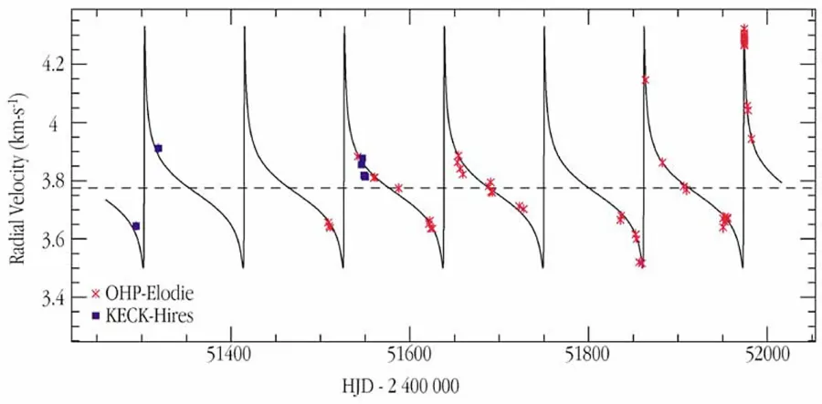

28. Januar 2009
HD 80606 b: extreme Umlaufbahn mit Hitzeschock
Bei seiner Entdeckung 2001 hatte HD 80606 b die am stärksten gestreckte Bahn aller damals bekannten Exoplaneten: Alle 111 Tage nähert er sich seinem Stern von 127 Millionen auf etwa 5 Millionen Kilometer.
Das Weltraumteleskop Spitzer beobachtete den Planeten während eines solchen Vorbeiflugs. Innerhalb von sechs Stunden stieg seine Temperatur von rund 530 auf etwa 1.230 Grad Celsius. Es war das erste Mal, dass Wetteränderungen auf einem Exoplaneten in Echtzeit verfolgt wurden. Anders als die meisten heißen Jupiter rotiert der Planet nicht gebunden, sondern dreht sich etwa alle 34 Stunden um seine Achse. Das System ist 190 Lichtjahre entfernt.
Quellen: NASA: "Spitzer Watches Wild Weather on a Star-Skimming Planet.", 28.01.2009; ESO: "Exoplanets: The Hunt Continues!", 04.04.2001